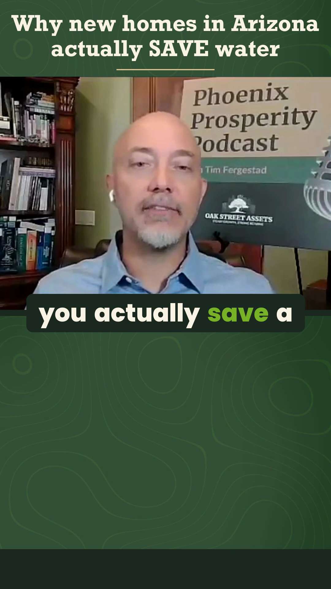
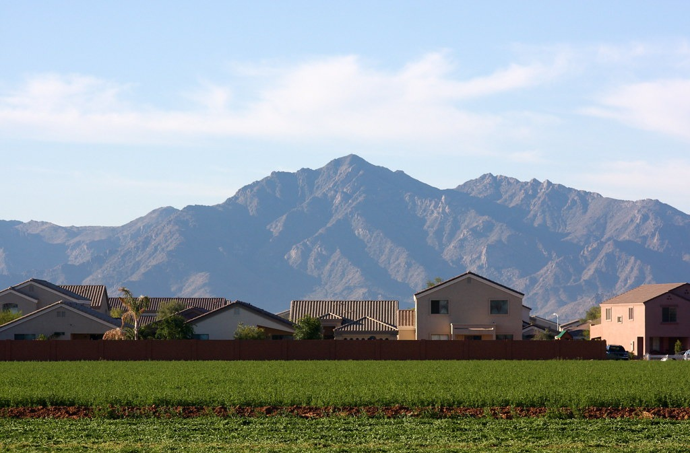

Tim FergestadOak Street Assets
You actually save
a ton of water

One design still for structure review. The video edit has not changed.
Design still from the existing Oak Street water clip. Supporting photo: Kevin Dooley, CC BY 2.0, cropped for this layout. The name label would appear briefly in motion.